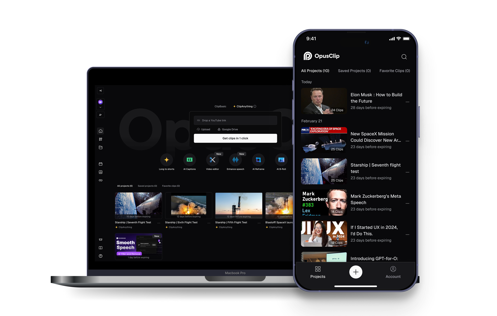
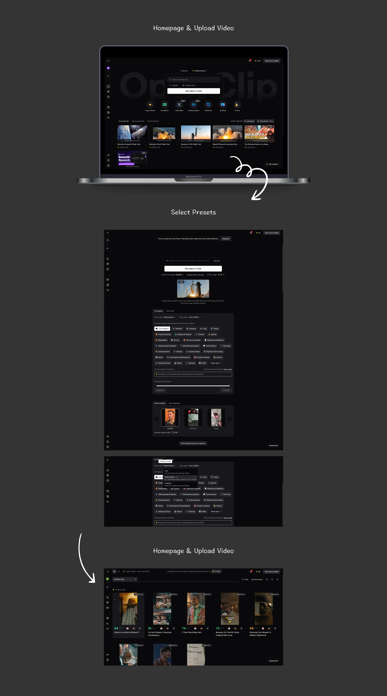
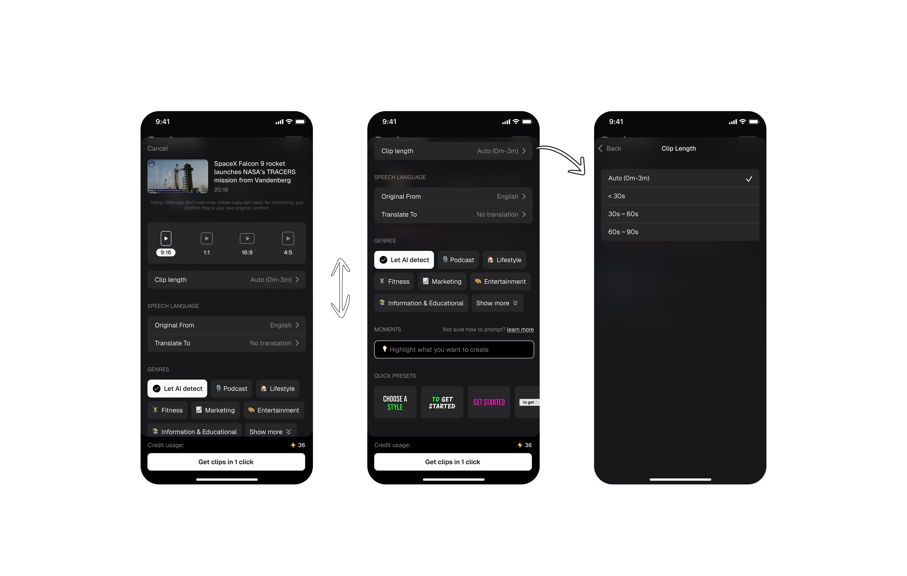
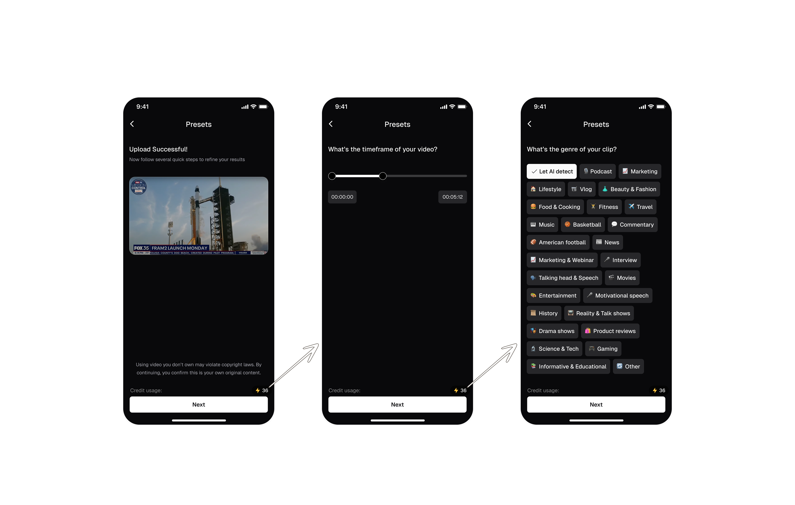
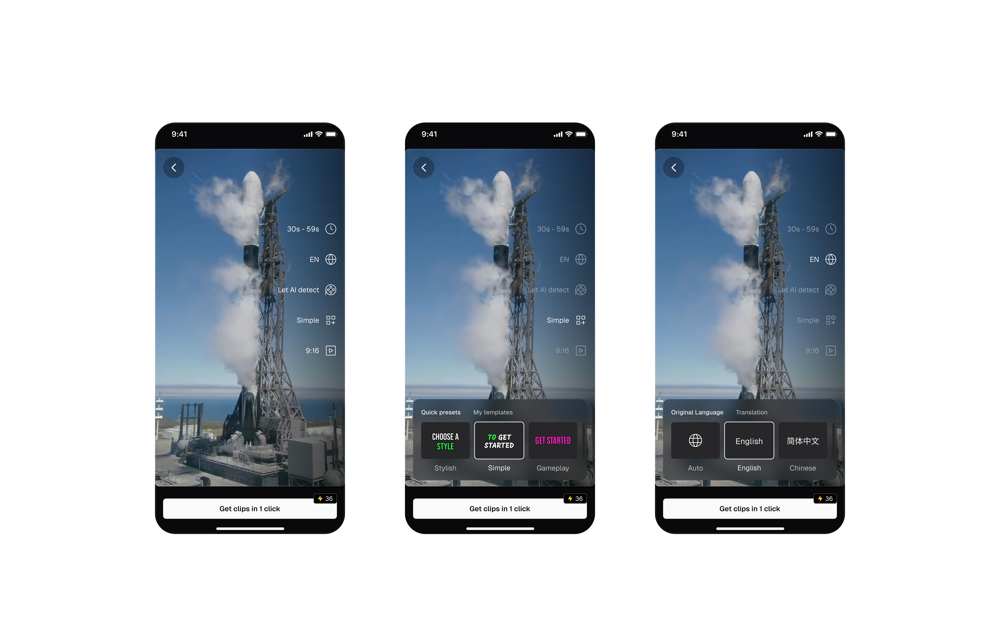
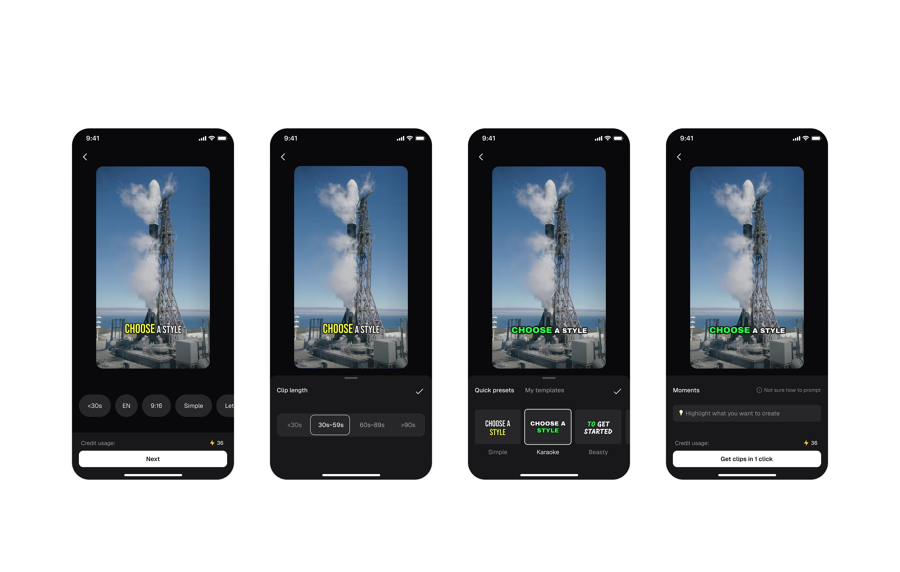
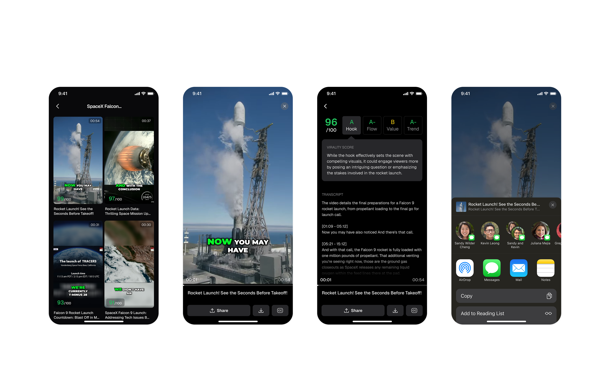
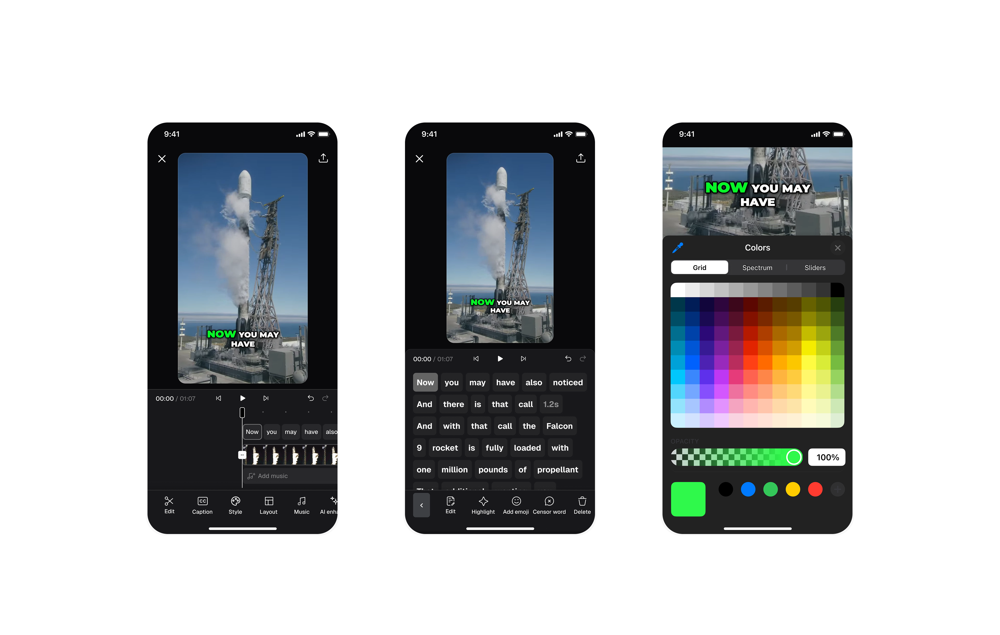
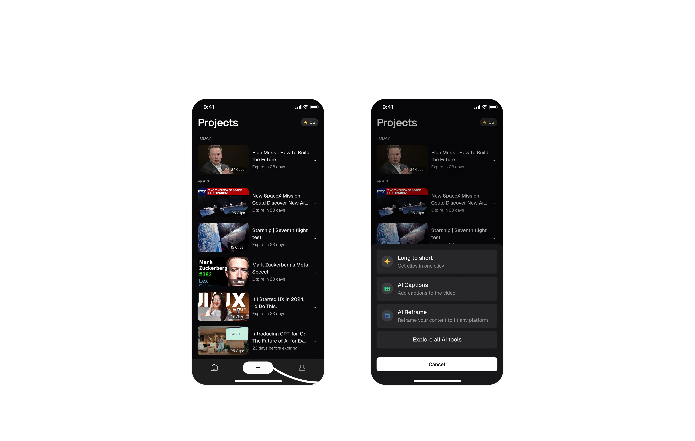

OpusClip App
Mobile MVP design for AI-powered video editing — bringing the power of OpusClip's viral clip generation to iOS for the first time.
An mobile MVP for OpusClip, designed to expand its reach and creator's on-the-go needs.
OpusClip is a fast-growing AI video editing startup. To expand its reach and meet creators' on-the-go needs, we developed a mobile experience that make video clipping and publishing more accessible and seamless.
opusclip-ai-video-clipping
Why mobile?
BUSINESS GOAL
- Increase retention and expand the user base
- Empower creators with on-the-go tools
- Drive organic growth from the app store
USER NEEDS
- Eliminates the need to transfer mobile-recorded content to a web platform.
- No need to wait 20 minutes-monitor AI progress, preview clips, and publish directly on mobile without returning to desktop.

Results in three metrics
RETENTION
Mobile design boosted day-7 retention (18% → 26%)
ADOPTION
Desktop users shifted to mobile, reducing drop-off
PUBLISH RATE
Mobile users published more clips (34% vs. 22%)
Let’s define the scope and create a lean but impactful mobile MVP
We scoped the mobile experience around the product's core value - transforming long videos into short clips and publishing them across platforms in one click. To deliver on this, we focused on four essential flows: video upload and preset selection, AI-powered clip generation, preview, and sharing, resulting in a lean yet impactful mobile MVP.

On the web, these flows were already well-defined but heavily desktop-oriented. When translating this flow into mobile, two key design challenges emerged:
HMW help mobile users select presets effortlessly?
To address these challenges, we explored multiple design directions and conducted several rounds of user testing. Insights from these sessions guided three major iterations, progressively refining the mobile experience.
1st Iteration: All-In-One Page
It gives users comprehensive control, but too many options on one page will also cause information overload.

2nd Iteration: Step-By-Step Wizard
The flow is easier to follow and presenting one choice at a time helps reduce cognitive load.
But it forces users to go through all the options and also makes it hard to change previous choice.

3rd Iteration: One Page Summary
The flow is fast and clean, the one-click entry point minimized design fatigue and also the sparse layout feels modern and high-end.
But the interaction here feels inconsistent.

Let's See The Final Design

HMW help mobile users easily preview and compare AI-generated clips？
1st Iteration: Click&Scroll
Easy comparison lets users quickly evaluate clips by duration, preview, and score, while transcripts and scoring rationale provide helpful context. However, excessive scrolling feels slow, and switching clips requires going back to the list view.
Click And Scroll
2nd Iteration: Swipe Left & Right
Easy to switch clips by swiping down, but actually swiping right conflicts with back gestures.
Swipe Left And Right
Let's See The Final Design

My key learnings
Strategic Scoping
Focus only on the most essential desktop flows — clip generation, preview, and sharing — to create a lean but impactful mobile MVP.
Strategic Scoping
Focus only on the most essential desktop flows — clip generation, preview, and sharing — to create a lean but impactful mobile MVP.
Edit clips as needed
The launched version currently focuses on the core flows defined in our mobile MVP. As the next step, we plan to bring advanced video-editing capabilities from the web to mobile — including editing tools, caption customization, and more. This will empower users with greater flexibility and truly enable on-the-go video creation.

